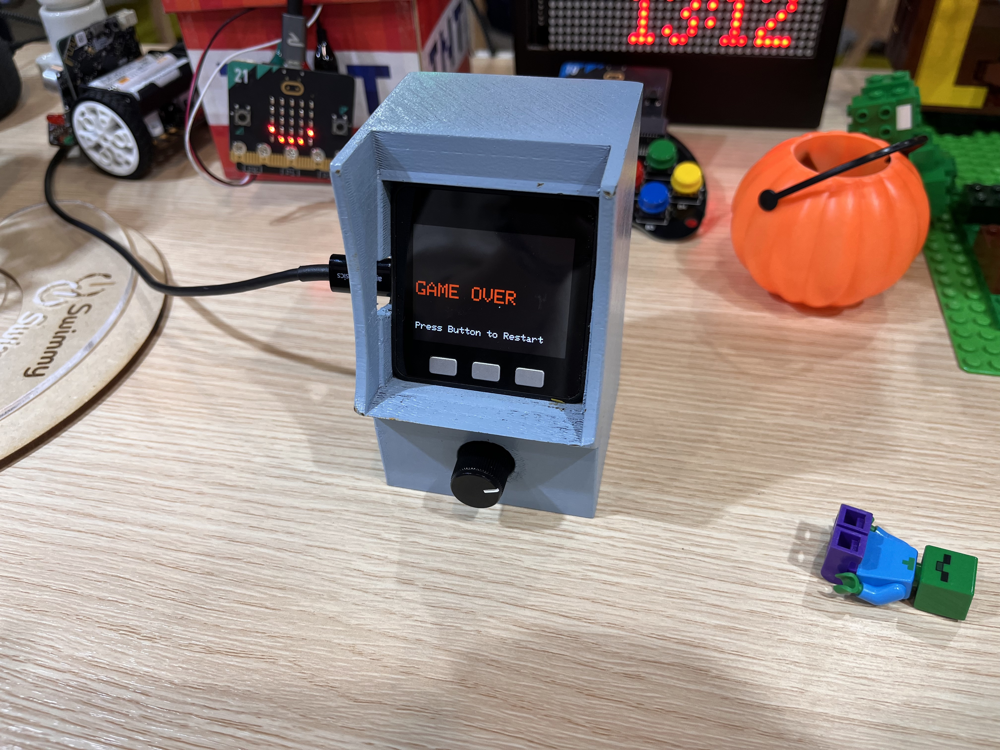
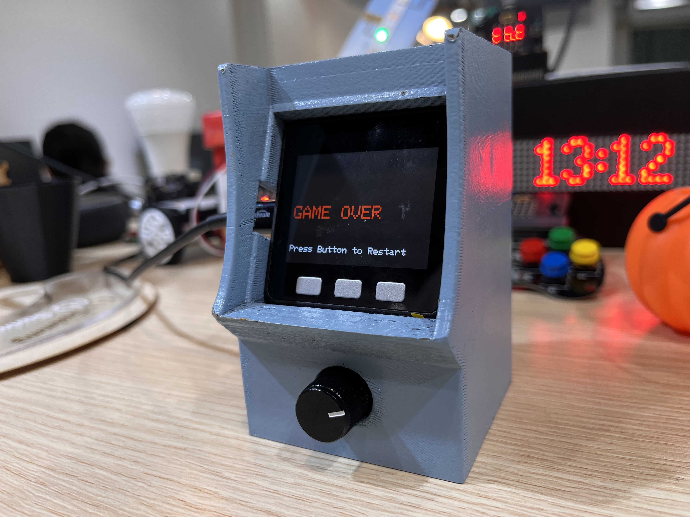

M5Arcade



- M5stack Basic
プログラミングが楽しいと思える瞬間は、どんなときだろうか。
私がアルバイトをしているプログラミング教室では、小学生から高校生までの子どもたちがテキストに沿って変数や関数、クラス化といった概念を学んでいる。子どもたちはそれらを理解していく一方で、「プログラミングを通じて何ができるのか」を実感しづらい様子だった。
私はクリエイティブコーディングを知ってから、コードを書くことそのものが楽しい行為になった。
そこで、子どもたちにも「プログラミングの先にある楽しさ」を体験してほしいと考え、 M5Stackを用いた作品 「M5Arcade」 を制作した。
この筐体では、「ブロック崩し」と「シューティングゲーム」の2種類のゲームを遊ぶことができる。
どちらも教室で学ぶプログラミングの概念（変数・配列・クラスなど）によって構成されており、 ブロックや敵キャラクターをオブジェクトとして管理している。
M5Arcadeは、学びの延長線上にある「作ることの面白さ」を伝えることを目的としている。
プログラミングを通して、自分の想像を形にすることを示すことで、 子どもたちの学びや人生をより豊かにするきっかけになることを願っている。
私がアルバイトをしているプログラミング教室では、小学生から高校生までの子どもたちがテキストに沿って変数や関数、クラス化といった概念を学んでいる。子どもたちはそれらを理解していく一方で、「プログラミングを通じて何ができるのか」を実感しづらい様子だった。
私はクリエイティブコーディングを知ってから、コードを書くことそのものが楽しい行為になった。
そこで、子どもたちにも「プログラミングの先にある楽しさ」を体験してほしいと考え、 M5Stackを用いた作品 「M5Arcade」 を制作した。
この筐体では、「ブロック崩し」と「シューティングゲーム」の2種類のゲームを遊ぶことができる。
どちらも教室で学ぶプログラミングの概念（変数・配列・クラスなど）によって構成されており、 ブロックや敵キャラクターをオブジェクトとして管理している。
M5Arcadeは、学びの延長線上にある「作ることの面白さ」を伝えることを目的としている。
プログラミングを通して、自分の想像を形にすることを示すことで、 子どもたちの学びや人生をより豊かにするきっかけになることを願っている。